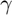
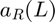
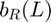
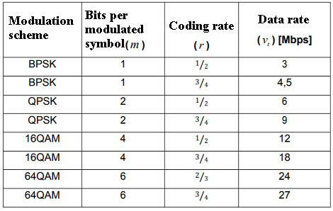

Predictive theoretical model of PER # 1
Model for vehicular networks by interpolation.
Contents
Syntax
PER = model_1(SNR, M, r, l)
Description
The model_1(SNR, M, r, l) function is a mathematical analytical model for the calculation of PER, the model is obtained by interpolating the PER data taken from a realistic simulation. This model is described based on a SNR value and the length of the packets. It is given by the equation:

Where  is the SNR in dB, L is the length of the packet in bits,  and  are parameters obtained as a function of the modulation scheme and coding rate. The values of and are given by the equations below.


The values of c and d are constants that depend on the modulation and coding used. The standard can reach different transmission speeds depending on the modulation scheme and coding rate. The configurations allowed by the IEEE 802.11 standard are specified below.

Input Arguments
- SNR
SNR value.
- M
Modulation scheme.
- r
Coding rate.
- l
Packet length in bits.
Output arguments
- PER
Calculated PER value.
Examples
The model_1(SNR, M, r, l) function is called.
function PER = model_1(SNR, M, r, l)
The table shows of constants c and d which are on the modulation scheme, coding rate and transmission speed. The first 4 columns correspond to the values of c, while the last 4 columns correspond to values of d. The values of the rows correspond to the different transmission speeds, being 3, 4.5, 6, 9, 12, 18, 24 and 27 Mbps.
c = [-13.64 8.939 -1.3 0.6895 0.0001286 -0.004565 0.0001003 -0.004927;
-15.29 9.228 -1.103 0.5428 0.0001216 -0.004469 9.348E-05 -0.004772;
-19.85 10.31 -1.313 0.5674 0.0001027 -0.004712 8.23E-05 -0.00505;
-22.12 10.93 -1.174 0.4898 9.08E-05 -0.003987 7.308E-05 -0.004162;
-25.97 12.83 -1.258 0.5459 0.0001124 -0.006063 8.505E-05 -0.006508;
-29.14 12.89 -1.164 0.4501 0.0001017 -0.004607 8.58E-05 -0.004811;
-39.27 18.17 -1.354 0.5715 8.056E-05 -0.0043134 6.918E-05 -0.004409;
-37.24 16.17 -1.219 0.4811 8.734E-05 -0.005424 7.552E-05 -0.005779;
];
The values of the constants are chosen depending on the modulation scheme. Also the r = 3/4 is always the second option of the same M.
i=0;
switch M
case 2
i = 1;
case 4
i = 3;
case 16
i = 5;
case 64
i = 7;
end
if r == 3/4
i = i+1;
end
Assignment of c and d constants.
c1 = c(i,1);
d1 = c(i,5);
c2 = c(i,2);
d2 = c(i,6);
c3 = c(i,3);
d3 = c(i,7);
c4 = c(i,4);
d4 = c(i,8);
The parameters and are calculated.
ar = ( c1 * exp(d1*l) + c2 * exp(d2*l) );
br = ( c3 * exp(d3*l) + c4 * exp(d4*l) );
The PER is calculated with the corresponding formula.
PER = (1 - tanh( ar - br*(SNR+10) ) ) / 2; % Originally it is 10 dB. if(PER<0) PER = 1; end
end
See also